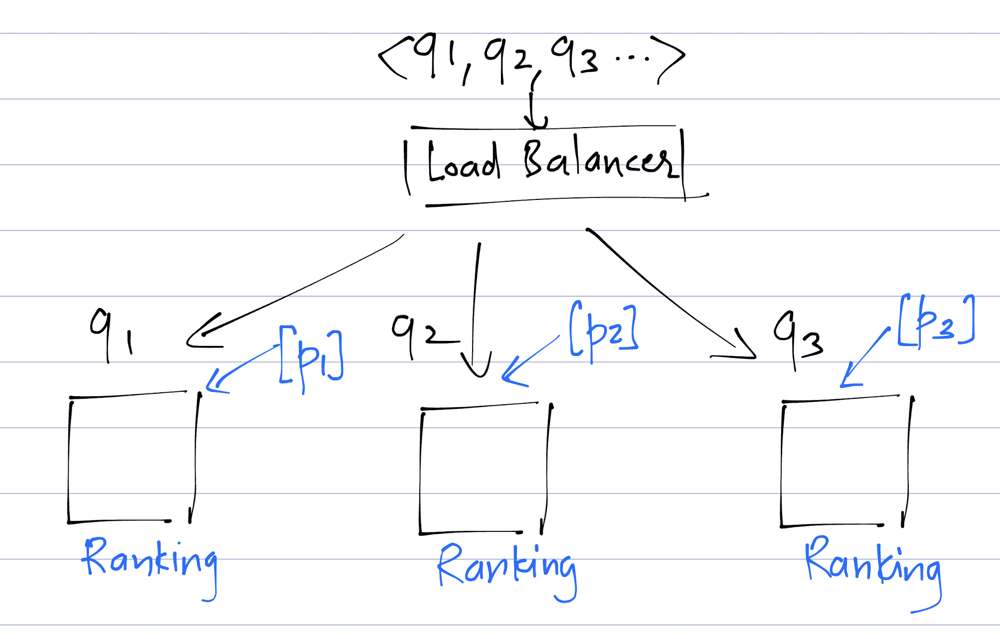
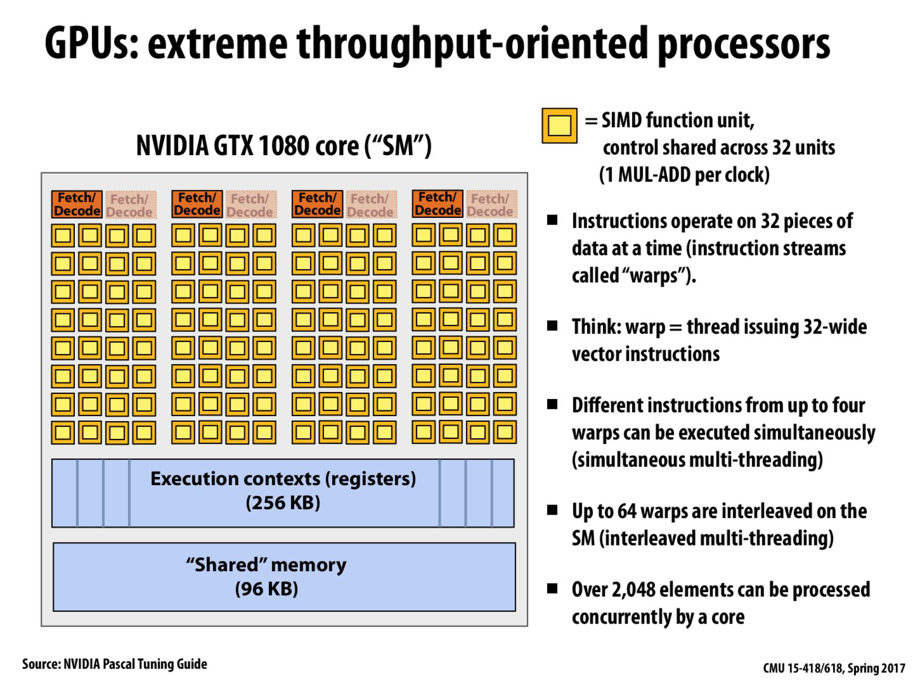

Building a Large Scale Search Ranking System: key principles
Table of Contents
Disclaimer: This is a "living" document of my musings on search ranking in the real world and will be in an unfinished state by definition. Some of the arguments will be hand-wavy rather than rigorous since this is not a scientific publication. I will try to keep it updated as my understanding of the subject evolves. Target audience1
1 Problem Statement
For this article we make the following assmptions:
- The domain is Ecommerce
- User "types" their intent in the form of a query (q)
- There is a huge collection of products. Typically tens of millions or even billions.
- Only a few products are relevant to the user
- Latency is important. Users expect to see results within ~ 100 ms
- There are millions of concurrent users
- The results are shown on what's typically called as the Product List Page (PLP). I denote this ranked list as \([p_{i}]\)
- There are other systems in the architecture like SOLR for boolean token matching, an ML module for query understanding etc. Focus here is on search ranking so we will assume that they exists without explaining them in detail.
2 Ranking errors on the first page are worse (for the customer experience) than on later pages
In both cases in the figure, there are 2 products that are ranked incorrectly. Assume that the correct ranking is a swap. The one on left is worse.

Figure 1: All ranking errors are not the same
2.1 Capturing this property through ML is not easy
A loss like NDCG takes into account this consideration. The idea is to inflate the relevance in a super-linear way and the intuition behind the discount is that after a certain rank the rank doesn't matter (because most users don't navigate so far down). \[NDCG@k = \sum_{1}^{k}GAIN(i) DISCOUNT(i) \] Note: I use x<- y to denote that x depends on y.
- DISCOUNT depends on the rank (r).
- DISCOUNT<-Rank<- Predicted score (\(S_i\))
- \(S_{i}\)<-\(\Theta\) (parameters over which the NDCG can be optimized)
However the rank of a product is a step function of the predicted score. To understand why think of products A and B with score(A)=score(B) + \(\Delta\). Small changes to score of B [this is what happends during training] \(\delta < \Delta\) don't matter. The rank does not change for a while and as soon as \(\delta > \Delta\) the rank of both A and B changes.2
Therefore we need to find a proxy that's differentiable and is an upper bound for NDCG or similar losses that matter to business
2.1.1 How to find a proxy metric?
It's not easy since it's an inverse problem. I'll go into the theory later but I'll be practical and discuss an algorithm called LambdaRank that has been very successful in the real world. I'll provide a hand wavy sketch of how it works (not a proof. There might not be a proof so I'll focus on the emprical) LambdaRank and LambdaMART paper
Figure 2: Ranking "force" heuristic of LambdaRank
\[ \mathrm{Force}_{k,l} = \lambda_{k,l} \mathrm{Scalefactor}(k,l) \Delta NDCG (k,l) \] Where $ Scalefactor(k,l)$ is a scaling factor from 0 to 1. This factor is larger if the difference in scores of \(k\) and \(l\) is large and negative. \(\Delta NDCG (k,l)\) is the change in NDCG if the product positons are swapped.
- The "force" is used as the residual (gradient of the training loss) that has to be optimized through iterations of gradient boosting.
- Thus a pair of products in mutually incorrect order gets a higher penalty if the difference in current scores is large and negative.
Thus the total force on a product that is in an incorrect position is the sum of the forces exerted on it due to pairwise violations and change in NDCG by resolving those violations. This is supposed to track NDCG better than just reducing the # pairwise violations.
3 Real world ranking needs to be efficient: inference latency and throughput, training cost & sample efficiency matter
3.1 Increase throughput(aka requests per minute)
3.1.1 Parallelize the work
The following strategies fall under this header. Note that these strategies can be used in combination as well and are not always mutually exclusive:
- [Strategy #1]Scaling horizontally on cpus and GPUs
This is the brute force strategy and it does not need much thought. Given a query \(q_i\) and a set of products \([p_{j}]\) the task of scoring each \(p_{j}\) against the query falls into the SIMD (Single Instruction, Multiple Data ) pattern In practice its highly effective and often the simplest since it does not need much algorithmmic thinking. GPUs have thousands of cores and can perform operations in parallel on multiple instances through batching. If the model is not very compute intensive then scaling by adding more cpu machines can also work.

When using this strategy of distributing the load across multiple nodes, it's important to remember that all products that are being ranked for a given query need to be brought to the same node ultimately for ranking
3
- [Strategy #2]Using models that can work on the same instance in parallel
This strategy can be used if the score can be decomposed into components that can be added together. Usually this property is restricted to linear models. This strategy was actually SOTA uptil about 2013 before the era of deep learning. Even in today's world where full attribution of the score into individual components at an instance level is needed this is one of the most suitable strategies. Eg: credit scoring systems where one might want to understand how much reduction in credit score was due to (say) a late credit card payment in a specific month[which would be a feature in the model]. Eg: in the following equation, Delinquent CC, Full time job can be indicator variables (0/1) and due to decomposability each effect \(w_{x} x\) can be separately computed.
\[\mathrm{Score}= w_{\mathrm{Delinquent CC}}\mathrm{Delinquent CC} + w_{\mathrm{Full time job}} \mathrm{Full time job} + ..\]
Note: in today's world most companies don't use such models for search ranking but when used the framework allows for massive parallelism.
3.2 Inference latency
At Internet and ecommerce companies latency matters the most. Each 100ms in latency costs hard dollars. There are multiple ways to reduce the inference latency. Here we talk about only unit latency (latency for a single prediction) so that we don't have to worry about throughput
3.2.1 Do less work
Model cascades are one mechanism through which the average case unit latency can be brought down. The key idea is:
- A cascade has n stages.
- At each stage there's a choice:
- that the instance can exit the cascade and a prediction is generated
- else the instance passes to the next model in the cascade
- The choice depends on the features of the instance. Assumption is that there is a mapping \(\bar{x}: \rightarrow {1,2, \ldots, n}\) of features \(\bar{x}\) to the stage at which the instance can exit the cascade
Figure 4: Cascades reduce average unit latency
3.2.2 System optimizations
This is about optimizations that exploit the features of the computer architecture like memory layout, vectorization capability etc to design optimized systems. The idea is not to reduce the # high level computations but to execute them more faster.
Footnotes:
Who will benefit
- ML engineers interested in building low latency search ranking systems that work at internet scale (think tens of millions of concurrent users)
- Applied ML scientists who are working in the domain of product search or document search-especially at large internet companies
Product/Program managers and business leaders who want to understand the technical side of search ranking
Who will not benefit If you are lookiing for mathematical theory of LTR etc. this is not the right place for it.
If your remember grade 12 calculus, a differentiable function of a single variable first has to be continuous-meaning the limits from left and right need to agree.